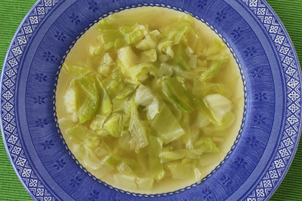

The Soup of the Cabbage Beast
This soup is very tasty. And it contains at least 1 nutrient of some kind. I don't know, I'm just a website.

Ingredients
- Cabbage (optional)
- Onion type things
- Some kind of fat
- Garlic
- Broth or Milk
- Spices (Pepper, Dill, Paprika, etc.)
You Must Cook It
- Fry up the little onion and garlic bits until they are nice and yummy looking
- Chop the cabbage very fine
- Cook the cabbage in the oil with the garlic and onions
- Add your other spices
- When the cabbage is all soft and cooked, Add your broth
- Let it boil for a long long time
- Eat it with your mouth